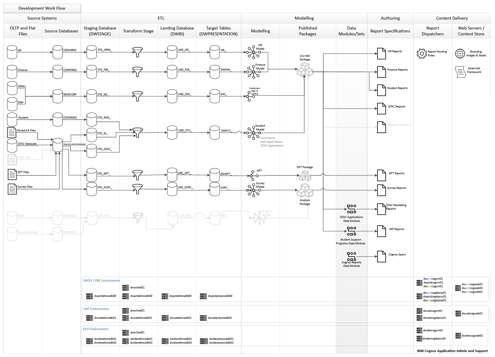
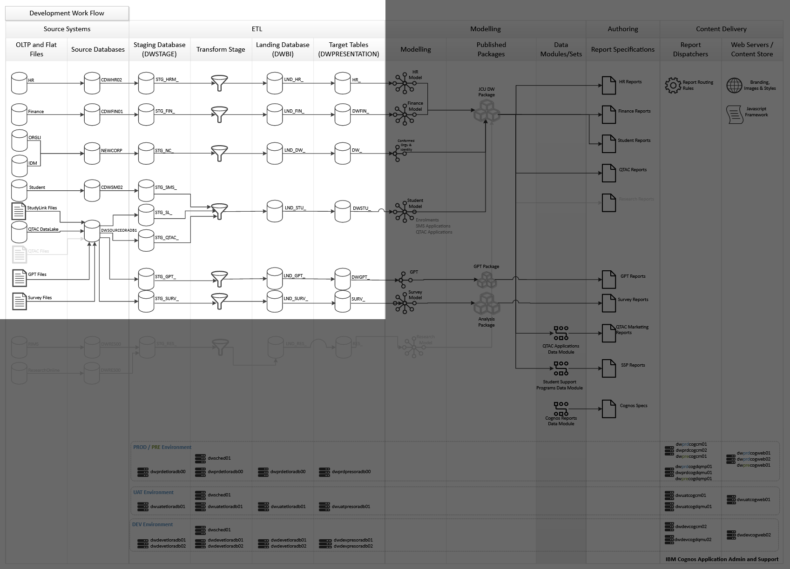
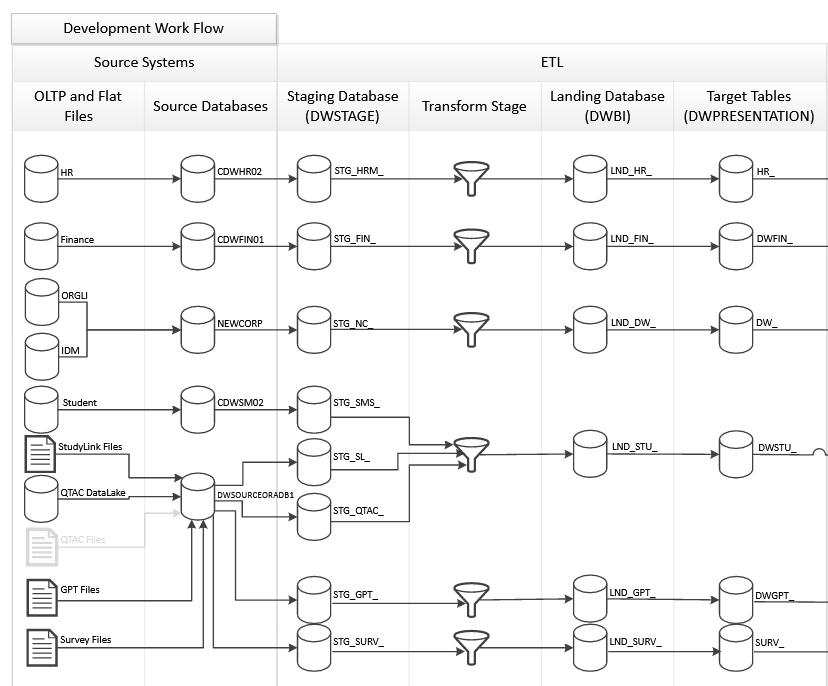
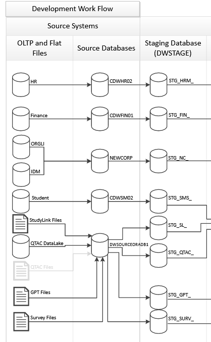
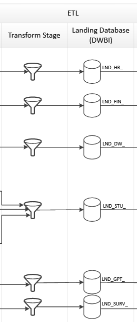
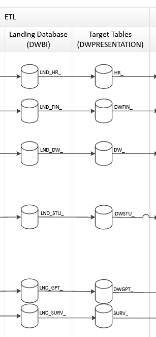
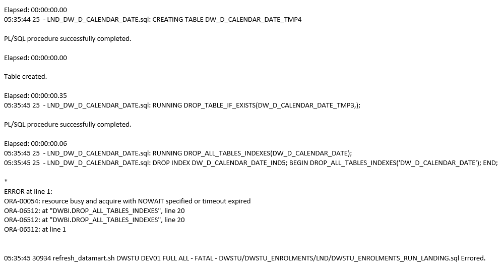
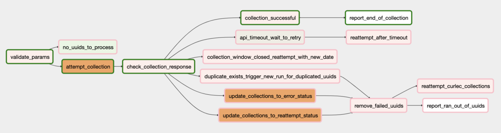

Hello!
Who Am I?
- Lenny (Leonard) Meerwood
- A Bachelor of Computer Science from Charles Sturt University
- Worked at:
I'm a Data Engineer
Work on a Data Pipeline
Business Intelligence Analyst
Business Insight Analyst
My Presentation Plan
Overview of the data pipelines (Project)
My contributions
- Stakeholder engagement
- Tools and technical solutions
- The teams I involve
- Documentation and development methodologies
- Success criteria for project
Data Pipeline
What does the data pipeline provide?
Datasets
The Data Warehouse
What are Datasets?
Bespoke information generated for a narrow purpose.
Advantages
- Easy to make
- Quick to deliver
- Fits the intended purpose
Disadvantages
- Not always quick and easy
- Maintenance
- Stuck to a specific scope
- Need to know all the columns at build time
The Data Warehouse
So what does it actually do?
Takes data from production systems, cleans it, applies business rules and provides the data in a format which allows cross-source analysis and encourages exploration.
Why not just use the source systems?
- Designed for reading and writing
- Slow for massive queries
- At the wrong grain
- Lacks dimensionality
What does this look like?
  The Process
- Extract
- Transform
- Load
Extract
Transform

Load
Future plans
Apache Airflow
Benefits
- Reduces chance for human error
- Allows for parallel execution
- Better error recovery
Current Error Notification
Airflow Error Notification
Other Airflow Advantages
- Design with cloud in mind
- Can be used for rudimentary data checks
My Involvement
Stakeholder engagement
Usual flow
- Notified by Dan
- Communicate directly with stakeholder
- CC Dan and Team Mates in correspondance
- Leave a paper trail
Tools and Technical Solutions
- Hand-crafted SQL
- Oracle SQL Databases
- Shell scripts for orchestration
Why Hand Crafted SQL?
- It's performant
- Not locked into any vendor
- SQL is widely known, allowing for easier hiring of staff
Why Oracle SQL?
- The business uses it
- Looking to move to open source alternative PostgreSQL
- No licensing fees
- Better community support
- No hidden black boxes
- It's mature, in development for 25 years
Internal and External Teams
Internal teams
- BIAs and Manager
- Talk about this more in the next section
External Teams
- Database Administrators
- Application Solutions
Documentation and Development Methodology

The move to Git
- Code needs to be stored with all revisions
- SVN was not good at this
- Benefits of Git are:
- Better history
- Easier code reviews
- Tighter integration with existing Atlassian ecosystem
- Accountability for changes
Knowledge Base
- Loss of team members brought knowledge base to mind
- Made me reflect on what issues we faced
- Too many single points of knowledge
- Other members where unaware of what we were doing
Reorgaization of Knowledge Base
- Johnny Decimal system
- Diátaxis Framework of documents
- Tutorials
- How-to Guides
- Refernce
- Explanation
- Page ownership and expiration dates
How does that help?
When someone asks for information, direct them to the relevant KB article
If it doesn't exist, make it and then point them to it.
Team Communication
- Utilize Jira
- A ticket for every piece of work
- A single source of truth for every change
- Jira links with Bitbucket
Team Communication
- Implement a changelog
- Lets the BIA's know exactly what has changed
Validating Success
- We carefully compare the data before and after the changes
- We get stakeholders to validate the changes
- We have automated checks in place